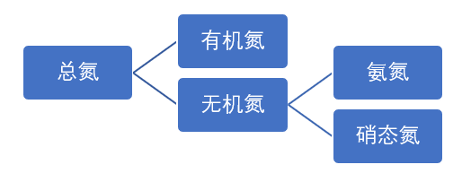
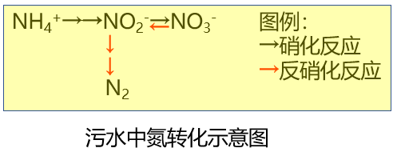

氨氮、硝态氮、总氮、和生物脱氮工艺
去冬今春接到许多客户的电话咨询污水中氮的去除工艺。或许是因为这段时间气温低，微生物的活性低造成系统脱氮效率下降；或许也因为环保部门的管理越来越严格了（当然是好事）。本文旨在厘清一些基本概念，供同行参考。
首先说一下污水中氮的种类。
污水中的氮有两种形式：无机氮和有机氮。无机氮包括氨氮（NH3，NH4+）和和包括硝态氮（NO2-，NO3-），有机氮是指蛋白质、氨基酸等有机物里存在的氮。有机氮和无机氮在有些情况下（尤其是有微生物存在）可以相互转化。水体中总氮就是水体内无机氮和有机氮的含量总和。其相互关系如下图所示：

氨氮和总氮是污水排放控制重要指标。
其次说一下不同形式的氮是如何相互转化的
水体中各种形式的氮相互之间通过同化作用、氨化反应、硝化反应、反硝化反应相互转化。具体如下
- 同化作用：微生物生长繁殖的过程中会吸收一部分氮，变成有机氮成为细胞的一部分，成为活性污泥离开水系统，这个过程叫同化作用。按照细胞干重来计算，微生物细胞中氮的含量约为12.5%。同化作用可以带走污水中20%的氮。
- 氨化反应：有机氮通过一系列生化反应转化成无机的氨氮，这个过程就是氨化反应。参与氨化反应的细菌也被成为氨化细菌。
- 硝化反应：硝化反应是氨氮转化为亚硝酸盐氮和硝酸盐氮的反应，反应通过硝化细菌完成。反应分两步，过程示意如下：
- NH4++3/2O2→NO2-+H2O+2H+
- NO2-+1/2O2→NO3-
- 总反应式：NH4++2O2→NO3- +H2O+2H+。显然硝化反应是氧化反应，要消耗大量的氧气，同时产生大量酸，所以需要补充大量的碱来平衡。所以溶解氧和碱度是硝化系统正常工作的关键因素。一般需要控制水的溶解氧（DO）不低于2PPM，总碱度控制不低于100PPM。
- 反硝化反应：反硝化反应是在缺氧条件下，亚硝酸氮和硝酸氮被还原成氮气(N2)。氮气排放到大气中从而污水得以脱氮。参与这一生化反应的是反硝化细菌。反硝化反应式如下：NO3-→NO2-→N2O-→N2。反硝化反应需要在缺氧条件下才能进行，溶解氧控制在0-0.3PPM才能实现反硝化作用。
以上所有反应简单总结在下面这个示意图里：

最后说一下生物脱氮的基本工艺
污水的脱氮有两条技术路线：物理化学脱氮和生物脱氮。由于可持续性好、综合运行成本低，生物脱氮的应用越来越多。但需要注意的是氨化反应和硝化反应可以降低氨氮水平，但不能降低污水的总氮。上述所有生化过程中只有同化反应（通过排泥带走）和反硝化反应（通过生成氮气排放到大气中）可以将氮从污水中带走，从而降低总氮。这个过程才是真正的“脱氮”。这也是地球上氮循环的一个重要组成部分。
生物脱氮的原理很简单，但具体工艺流程差别很大，限于篇幅，需要单独的文章来阐述。
转载请注明半点科技网站地址：www.dropletech.net